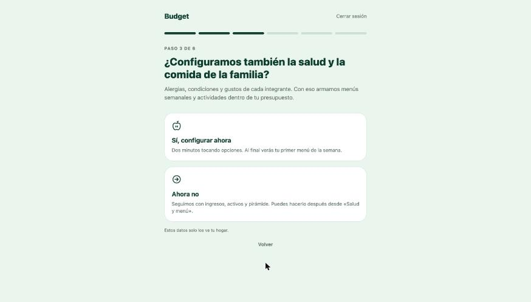
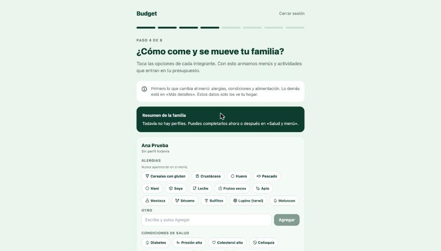
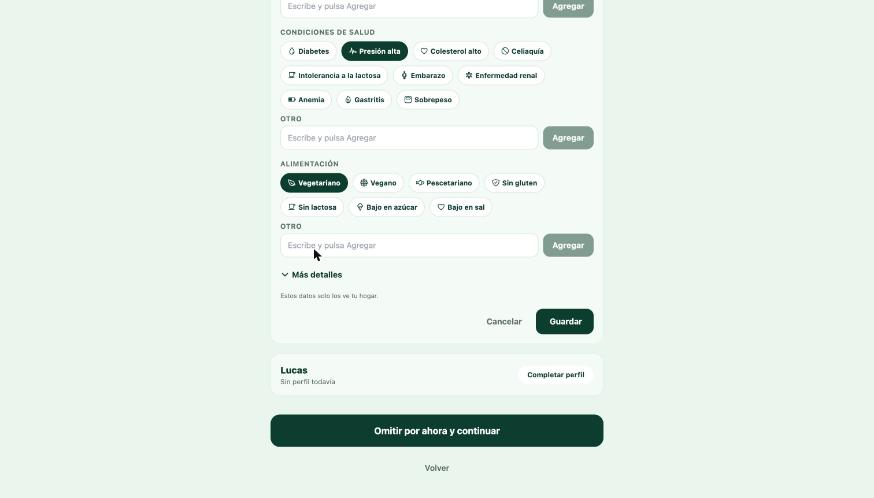
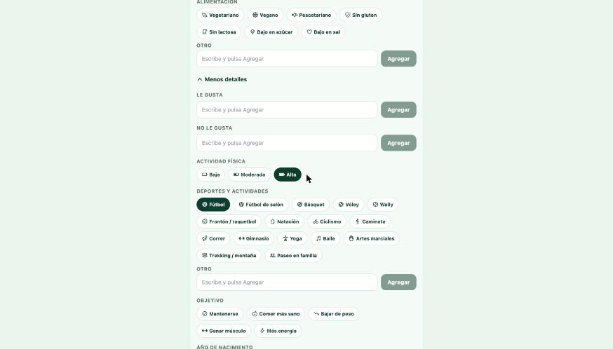
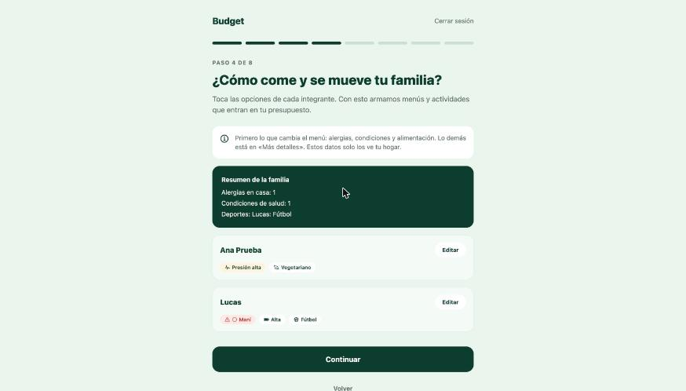
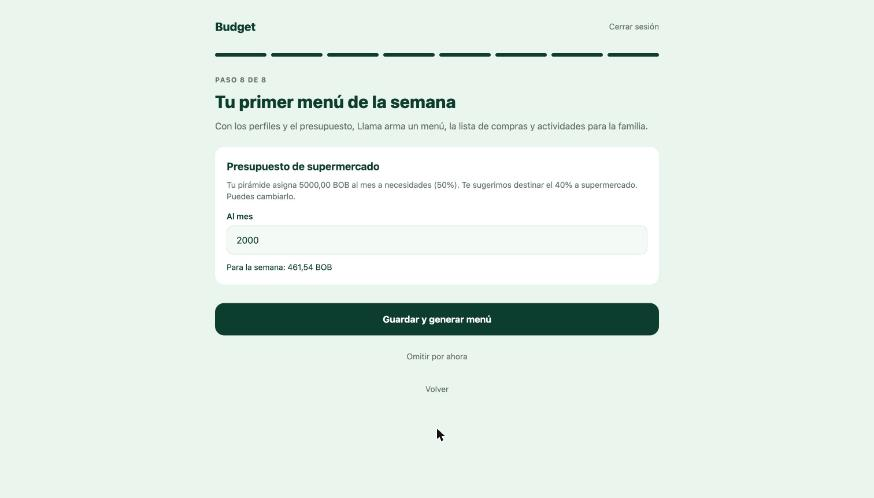
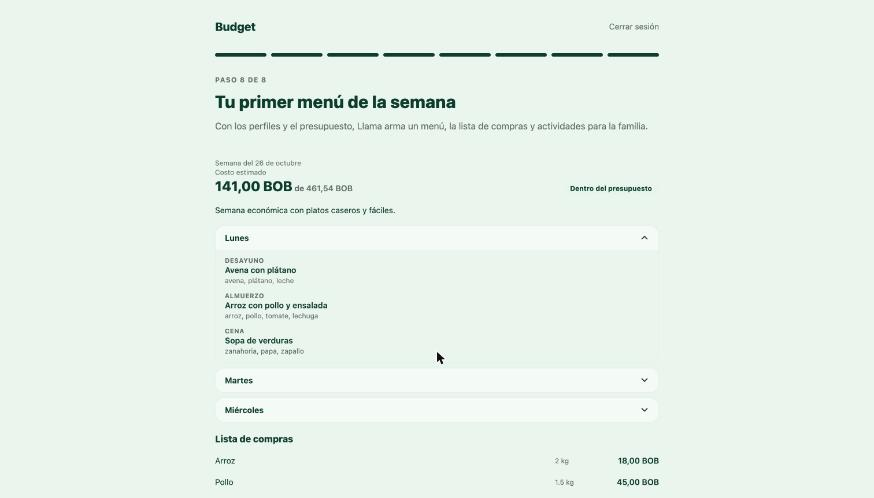
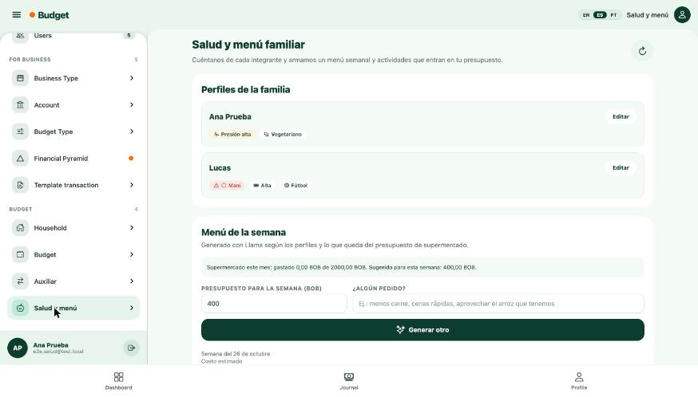

Ahora, al registrar tu hogar, la app te pregunta si quieres configurar la salud y la comida de la familia. Si dices que sí, cargas a cada integrante tocando opciones y, al terminar el registro, recibes tu primer menú de la semana con la lista de compras, sin nada a lo que alguien sea alérgico y dentro de tu presupuesto.
Si dices que no, el registro sigue igual que siempre. Puedes completarlo después desde Salud y menú.
Después de agregar a los integrantes del hogar aparece esta pregunta. Toca Sí, configurar ahora o Ahora no.

Cada integrante tiene su tarjeta. Toca las alergias que tenga. Si no está en la lista, escríbela en Otro y toca Agregar.

Más abajo están las condiciones (diabetes, presión alta, embarazo…) y el tipo de alimentación (vegetariano, sin lactosa…). Toca las que apliquen y luego Guardar.

Toca Más detalles para sumar gustos, nivel de actividad física, deportes, objetivo, año de nacimiento, peso y altura. Nada es obligatorio.

Arriba ves cuántas alergias y condiciones hay en casa y quién hace deporte. Toca Continuar para seguir con ingresos, activos y pirámide.

Después de la pirámide, la app te sugiere cuánto gastar en supermercado: el 40% de lo que la pirámide asigna a necesidades. Puedes cambiar el monto. Toca Guardar y generar menú.

En unos segundos aparece el menú por día, el costo estimado frente a tu presupuesto, la lista de compras y actividades para la familia. Toca Empezar para ir al inicio.

Todo lo que cargaste aparece en el menú lateral, en Salud y menú. Ahí puedes editar perfiles y pedir otro menú cuando quieras.

Los costos son estimaciones. El menú no reemplaza la indicación de un profesional de salud. Estos datos solo los ve tu hogar.